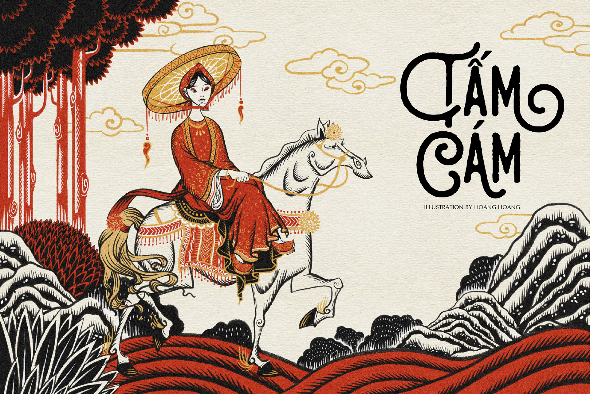

- Tấm là hình mẫu của sự chịu đựng, hiền lành và nhẫn nại. Cô luôn cố gắng vượt qua những khó khăn, từ việc bị mẹ kế và em gái Cám ngược đãi đến việc khắc phục những mất mát trong cuộc sống.
- Hình ảnh Tấm cũng phản ánh khát khao về công lý và sự thật. Dù trải qua nhiều đau khổ, Tấm vẫn giữ niềm tin vào cái thiện. Hành động của Tấm khi trả thù Cám ở cuối truyện có thể gây tranh cãi; một số có thể thấy đây là sự thể hiện sức mạnh của công lý, trong khi những người khác có thể cảm thấy điều này làm mất đi tính thiện của cô.
- Sự biến hóa của Tấm từ một cô gái hiền lành trở thành hoàng hậu cũng thể hiện rằng công lao và đức hạnh cuối cùng sẽ được đền đáp.
Khám phá truyện dân gian Tấm Cám
di sản văn hóa và những thông điệp nhân văn

Lý do chọn nghiên cứu
Truyện Tấm Cám phản ánh rõ những đặc trưng của văn hóa dân gian Việt Nam, từ cách xây dựng nhân vật đến các yếu tố thần thoại, tâm linh và phong tục tập quán.
Các nhân vật trong truyện không chỉ phản ánh rõ các mối quan hệ gia đình trong xã hội phong kiến mà còn là bài học về đạo đức, trách nhiệm và lòng kiên trì trước nghịch cảnh.
Từ những giá trị đạo đức và văn hóa sâu sắc, truyện Tấm Cám còn mở ra nhiều góc nhìn khác nhau trong việc nghiên cứu về quyền lực, giới tính và công lý.
Việc nghiên cứu truyện Tấm Cám giúp khám phá sâu hơn những giá trị cốt lõi trong truyện, đồng thời đóng góp vào việc bảo tồn và phát huy giá trị văn hóa dân gian Việt Nam trong thời hiện đại.
Tổng quan nội dung
Lịch sử và xuất xứ
Tóm tắt
Phân tích nhân vật
Phân tích các giá trị văn hóa và tín ngưỡng trong truyện
Các giá trị đạo đức vã xã hội trong truyện
So sánh với các truyện cổ tích khác
Ý nghĩa thời hiện đại và phê phán trong truyện
Get in touch
Do you have a project in your mind, contact me hereFind Me
Email: john@doe.com
Tel: +250 708 770 000